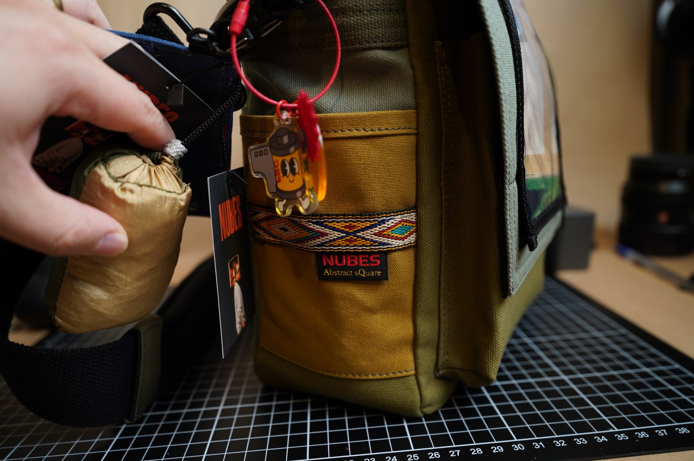
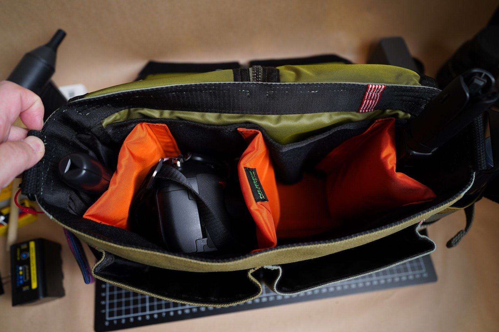
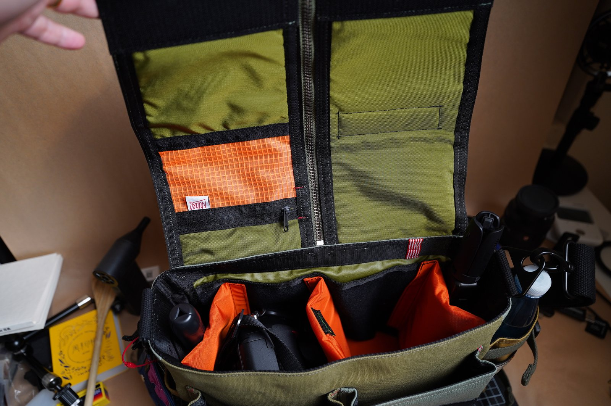
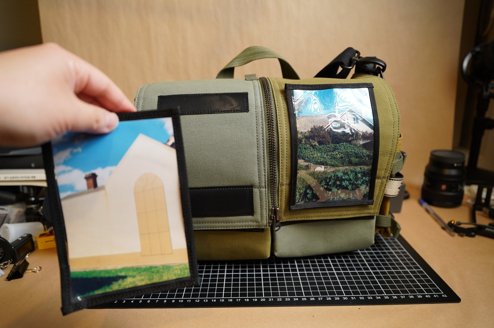
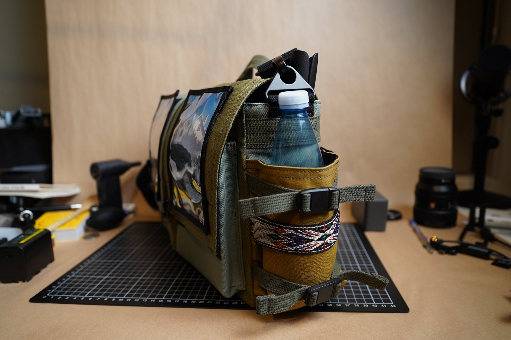
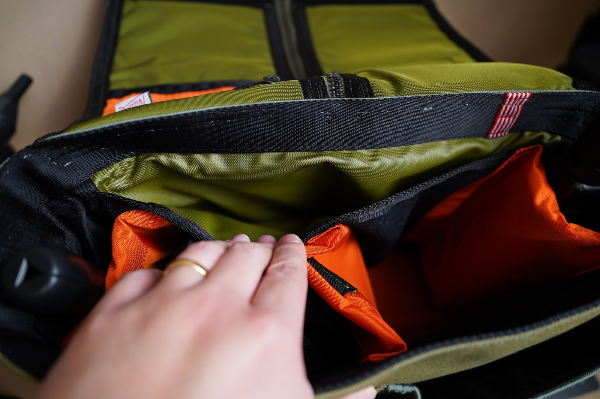
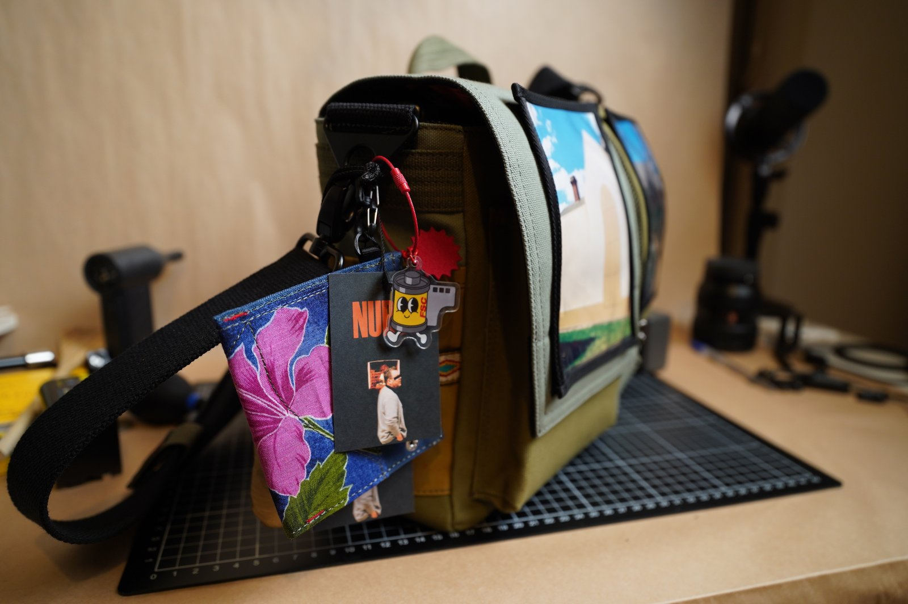

농담처럼 이야기하지만 저에게는 치료되지 않는 병이 하나 있습니다. 아마 제 주변에도 이 병을 앓고 있는 분들이 꽤 많을 겁니다. 바로 장비병입니다. 저는 장비병이 상당히 심한 편인데, 특히 카메라와 렌즈에는 아낌없이 투자하면서도 이상하게 삼각대나 카메라 가방에는 큰돈을 쓰지 않는 편이었습니다. 그런데 최근 이런 생각을 바꾸게 만든 카메라 가방을 하나 발견했습니다. 오랜만에 정말 마음에 드는 제품을 만나 여러분께 소개해 드리려고 합니다.
제가 이번에 구매한 제품은 누베스의 프레스 센터라는 카메라 가방입니다. 협찬이 아닌 내돈내산이고, 가방을 받은 지는 약 2주 정도 되었습니다. 누베스 사장님과는 올해 초 고래사진관에서 열린 플리마켓에서 처음 만났는데요. 당시 이야기를 나누면서 카메라를 향한 열정과 사진을 정말 좋아하는 분이라는 게 느껴졌습니다. 단순히 가방을 판매하는 사람이 아니라 사진과 카메라를 좋아하는 사람이 직접 만드는 제품이라는 점도 인상적이었습니다.
딱 맞는 카메라 가방은 왜 없을까
사진을 오래 찍어온 분들이라면 공감하시겠지만, 딱 마음에 드는 카메라 가방을 찾는 게 생각보다 정말 어렵습니다. 디자인이 마음에 들면 수납공간이 부족하고, 수납이 마음에 들면 크기나 재질이 아쉽습니다. 모든 조건을 만족하는 제품을 찾았다고 생각해도 막상 사용하다 보면 마음에 들지 않는 부분이 하나둘씩 생기곤 합니다. 그래서인지 사진을 오래 찍은, 소위 고인물이라고 불리는 분들을 보면 결국 자신의 이름을 걸고 직접 카메라 가방을 만들기도 하더라고요.
그런데 누베스는 커스텀이 가능한 카메라 가방입니다. 원단이나 색상은 물론이고 원하는 디자인과 필요한 부분들을 상담을 통해 반영할 수 있습니다. 다시 말해 세상에 하나밖에 없는 나만의 카메라 가방을 만들 수 있다는 뜻입니다. 벌써 두근두근하지 않으신가요? 저처럼 남들과 똑같은 제품보다 조금 특별한 물건을 좋아하는, 이른바 '홍대병'이 심하신 분들이라면 이쯤에서 이미 누베스 인스타그램을 검색하고 계실지도 모르겠습니다.

크리에이터와 함께 디자인한 프레스 센터
제가 선택한 프레스 센터는 크리에이터 사이먼님과 누베스 사장님이 함께 디자인한 모델입니다. 내부에는 13인치 아이패드를 넣을 수 있는 공간이 있고, 앞쪽에는 두 개의 포켓이 있습니다. 뒤쪽과 양쪽에도 별도의 수납공간이 있어서 생각보다 많은 물건을 넣을 수 있습니다. 제 장비를 기준으로는 라이카 M2, 니콘 D200 + 35mm 렌즈, 소니 A7C + 16-25G 렌즈, 오즈모 포켓과 오즈모 나노까지 넣고도 내부 공간이 꽤 넉넉했습니다.

기본적인 구성도 크리에이터가 직접 디자인에 참여해서 그런지 실제 카메라를 들고 다니는 사람의 입장에서 잘 만들어졌다는 느낌을 받았습니다. 특히 지퍼가 달려 있어 가방을 쉽게 열고 닫을 수 있고, 필요할 때는 한쪽만 열어서 장비를 꺼낼 수도 있도록 디자인되어 있습니다. 별것 아닌 것처럼 보이지만 실제로 사용해 보면 이런 부분들이 꽤 편리합니다.

제 사진을 넣은 가방
그리고 이제부터가 하이라이트입니다. 저는 처음부터 그냥 카메라 가방 하나를 사는 게 아니라 저만의 유니크한 카메라 가방을 만들고 싶었습니다. 무엇보다 저라는 사람을 잘 보여줄 수 있는 가방을 만들고 싶어서 가방 겉면에 제가 직접 촬영한 사진을 넣을 수 있도록 커스텀했습니다. 사진가가 자신이 촬영한 사진을 가방에 넣고 다닌다는 것도 재미있었고, 무엇보다 정말 세상에 하나밖에 없는 제 가방이라는 느낌이 들어서 마음에 들었습니다.

또 하나 꼭 넣고 싶었던 것이 있었습니다. 저는 크로스 형태의 카메라 가방을 찾을 때마다 항상 물통을 넣을 수 있는 공간을 원했는데, 의외로 이런 카메라 가방이 거의 없었습니다. 특히 거리사진을 찍을 때는 오랫동안 걸어 다니는 경우가 많아서 물통을 가지고 다니는 편인데, 대부분의 카메라 가방에는 마땅히 물통을 넣을 공간이 없더라고요. 그래서 이번에는 아예 누베스 가방을 주문하면서 물통을 넣을 수 있는 공간까지 따로 만들어 달라고 요청했습니다. 예~!

결과적으로 제가 원했던 직접 촬영한 사진을 활용한 디자인과 물통을 위한 별도의 수납공간을 모두 반영할 수 있었습니다. 그렇게 완성된 가방을 처음 받아봤을 때 정말 마음에 들었습니다. 그냥 새로운 카메라 가방을 하나 샀다는 느낌보다는 제가 머릿속으로 생각했던 가방을 실제로 만들어냈다는 느낌에 가까웠습니다.
주문은 장비 셋업에서 시작한다
누베스 가방은 보통 자신이 평소 가지고 다니는 카메라와 렌즈 등의 장비 셋업을 기준으로 사이즈와 구성을 정한다고 합니다. 어떤 카메라를 사용하는지, 렌즈는 몇 개를 가지고 다니는지, 어떤 방식으로 가방을 사용하고 싶은지 등을 누베스 사장님과 상담해서 자신에게 맞는 가방을 만들 수 있습니다. 색상이나 원단 같은 부분도 직접 선택할 수 있고요. 궁금한 점이 있다면 누베스 인스타그램 DM을 통해 문의해 보시는 것을 추천합니다. 저도 상담 과정에서 친절하게 안내받았습니다.

아직 사용한 지 2주 정도밖에 되지 않았기 때문에 내구성이나 장기간 사용했을 때의 만족도까지 이야기하기에는 조금 이른 것 같습니다. 이런 부분은 앞으로 더 오래 사용하면서 확인해 봐야겠죠. 하지만 현재까지는 디자인과 수납공간, 그리고 무엇보다 제가 원하는 요소들을 직접 반영할 수 있었다는 점에서 상당히 만족하고 있습니다.
저처럼 기존에 판매되는 카메라 가방이 항상 2% 부족하게 느껴졌거나, 평소 가지고 다니는 장비에 딱 맞는 가방을 원하는 분, 혹은 세상에 하나뿐인 나만의 유니크한 카메라 가방을 가지고 싶은 분이라면 누베스를 한 번 살펴보셔도 좋을 것 같습니다. 장비병도 모자라 홍대병까지 있으신 분들에게는 특히 위험할 수 있습니다. 저처럼 결국 주문하게 되실지도 모르겠습니다. 가즈아!
